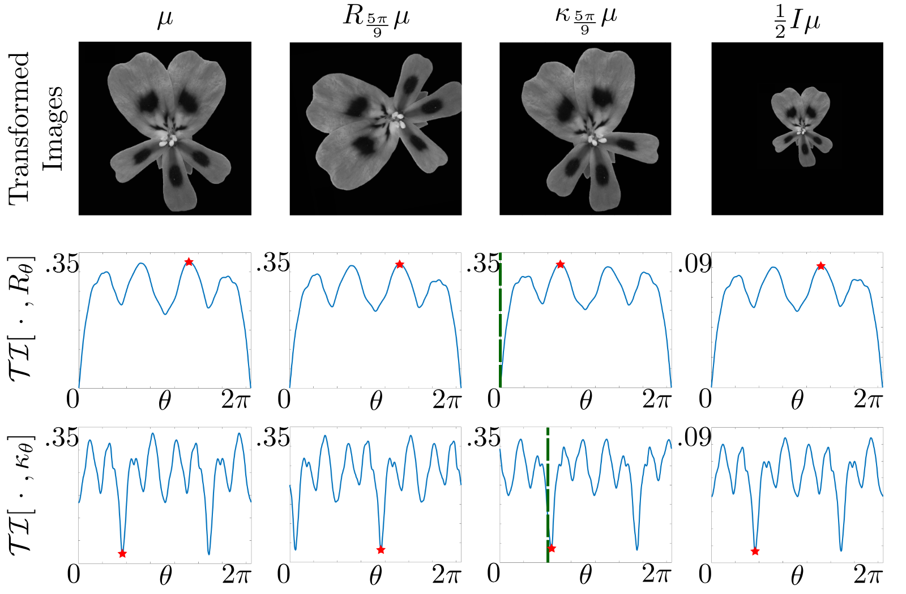

A high-throughput tool for quantifying symmetry in image datasets
Biological symmetry is usually reduced to a discrete, subjective label, even though real organisms are symmetric by degrees. With Punit Gandhi, Maria-Veronica Ciocanel, and Adriana Dawes, I built a user-friendly computational pipeline that measures symmetry as a continuous variable using transformation information. We prove the measure is invariant, equivariant, and Lipschitz continuous under translation, rotation, reflection, and rescaling, which means it can be applied across heterogeneous image datasets without manual landmarking or alignment.
Published in the Bulletin of Mathematical Biology. Read the paper (free access) → Code →
